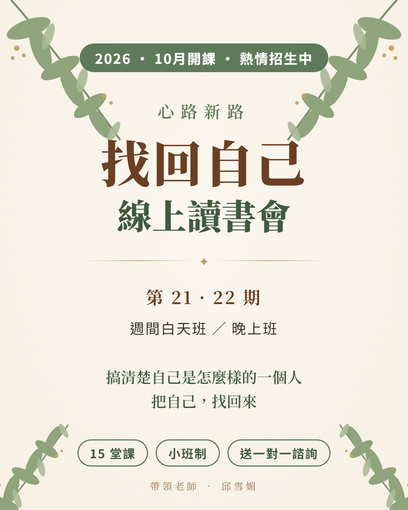

🌿 心路新路「找回自己」線上讀書會
第 21、22 期 ‧ 週間白天班／晚上班
在經典的光照中梳理生命故事，
找回最真實、被愛的自己
這個讀書會，是為你準備的
- 如果你需要搞清楚自己到底是怎麼樣的一個人
- 如果你需要把自己找回來
- 如果你需要為目前的生命挑戰找到新的方向及力量
- 如果你需要真誠地被聆聽
- 如果你需要了解跟你不一樣的人到底是怎麼想的
你將會在這個 CP 值超高的讀書會，經歷超乎想像的豐富、收穫、支持以及愛。
課程資訊
📅 上課時間
2026 年 10 月開始，每堂 2.5 小時，共 15 堂。請假可以看回放影片補課。
🗳 開放投票的時段（請在 LINE 讀書會群組中投票，以得票數最高的時段開課，滿 6 人開班）
🌙 晚上班：週四、週五晚上 7:00–9:30（兩個時段）
☀️ 白天班：週二、週四、週五上午 9:30–12:00；週二、週五下午 1:30–4:00（五個時段）
☀️ 白天班：週二、週四、週五上午 9:30–12:00；週二、週五下午 1:30–4:00（五個時段）
💻 上課地點
線上讀書會
💰 費用
9,000 元，共 15 堂課。講義印製及寄送費用實支實付。
有困難一次繳全期費用者可分期；確定開班、時間可以配合再繳費。確定開課及要參加者再提供匯款帳號。
歡迎老同學回來複習，費用自由奉獻！
有困難一次繳全期費用者可分期；確定開班、時間可以配合再繳費。確定開課及要參加者再提供匯款帳號。
歡迎老同學回來複習，費用自由奉獻！
👥 小班制
為確保每個人有足夠的分享時間，每班招收新生上限 10 位，以填單順序錄取。
📖 參考書籍
1.《從聖經中尋見真我》林瑜琳 著／使徒出版社（請在讀書會開始前自行購買）
2.《你的人生，他們六個說了算：驚嘆號決定你一生的六種物質》平安文化
2.《你的人生，他們六個說了算：驚嘆號決定你一生的六種物質》平安文化
🎁 每位同學獲贈一堂 100 分鐘一對一諮詢，將生命歷程做統整性的分析歸納整理。
為什麼要參加這個讀書會？
許多人對於心理成長很有興趣，也上了很多課程，但總覺得不知如何運用。您需要的是可以帶著您細細整理自己生命經驗的讀書會！隨著讀書會的進行，您也將逐步完成生命歷程的書寫，也將會有從神而來新的眼光，看見新的方向。
如果您有以下情況，這個讀書會就是您所需要的：
- 想要更認識自己，及明白上帝對自己生命的帶領
- 理性上知道需要接納、鼓勵孩子或配偶，但就是會看不慣其言行舉止，有意無意說出破壞關係的話
- 一直覺得自己不夠好，深受低自信、羞愧的困擾
- 希望學習有效關懷、幫助人
我常常聽到成員在過程中如釋重負、豁然開朗地說：「我現在終於知道自己為什麼會這樣了」、「我知道接下去該怎麼面對生命的問題了！」認識自己被造得美好，會讓您驚訝自己生命的祝福、美好及力量超過自己的想像！
有興趣進一步學習關懷技巧者，均須在此讀書會完成自己生命歷程的梳理，方能參加進階課程。
15 週課程大綱：尋見真我 × 大腦的主題
| 週次 | 尋見真我的主題 | 大腦的主題 |
|---|---|---|
| 1–2 | 第一單元 伊甸園原型的復原：祝福與復原力五大祝福 讓人幸福・兩大需求 讓人滿足・兩大氣圈 孕育神子・上主甚好的眼光形塑你我 | 多巴胺 |
| 3–4 | 第二單元 「種子原型」的尋見與肯定原型快樂 伴人前行・上主恩典 環繞保護・原型之愛 圈住你我・上主的好像樣式 | 催產素 |
| 5–8 | 第三單元 「後原型」的辨識與澄清後原型存在、關係、成就、獨特、榮耀模式 | 血清素 皮質醇 |
| 9–10 | 第四單元 樂在「成長原型」原型榮耀・原型架框・原型行動 | 腦內啡 睪固酮 |
| 11–12 | 第二部 靈的歷程心與魂的特性・身心靈的互動性・身心靈虛實模式・心靈得醫治 | — |
| 13–15 | 學員「尋見真我報告書」期末分享 | — |
帶領老師：邱雪媚
學歷
台北市立師院幼教系畢業、衛理神學研究院教牧諮商碩士、神學碩士。現為衛理神學研究院教牧學博士研究生。
現任
心路新路個人成長中心工作室負責人、教牧協談學會教牧協談師、拿撒勒神學院教牧輔導老師、台灣 Focus 愛家協會監事。常應邀至社區、國小進行親職講座、教師研習。
曾任
宇宙光關懷輔導中心教牧輔導員、台灣教牧協談學會秘書長。
專長
教牧協談（成人、兒童、家庭、婚姻、婚前協談）、婚姻講座、親職訓練及講座、兒童師資訓練、個人生命梳理讀書會、同理心訓練、基本協談技巧。
學員心得分享
「我在上帝的眼中也是甚好的啊！⋯⋯看自己16歲的兒子也不再是那個青春期叛逆的臭小子，而是一個善解人意、心疼媽媽的小男人了。」— 劉姊妹（第18期）
「透過這個課程，重新更認識自己，接納自己的不完全，拿掉有毒的羞愧感，進而讓自己更自在坦然的與人相處，也了解孩子是獨立分化的個體，大大改善了親子的關係。」— 陳小姐，50歲，家管
「當老師引導我看到上帝造我的『甚好』，我就可以分辨從後天經歷而來的負面影響，其實不足以破壞上帝所造的我。每次上完課都有被拆框、被建立的喜樂。」— 王姊妹（師母，第8期）
「上完這門課，用四個字句來說：歸納事件、尋回源頭、認清自己、理解他人、原諒過去、饒恕前人、肯定旁人，最後，行在神創造我的旨意中。」— 高姊妹
📝 我要報名讀書會
- 填寫報名表單
- 加入 LINE 讀書會群組，在群組的「投票」中勾選所有可以參加的時段
- 以選擇人數最多的時段開課，確定開課後再提供匯款帳號
